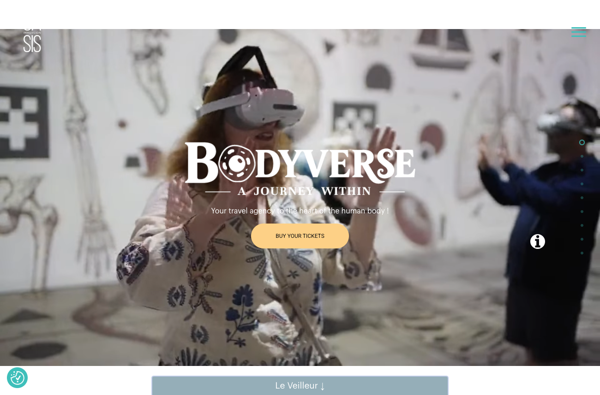
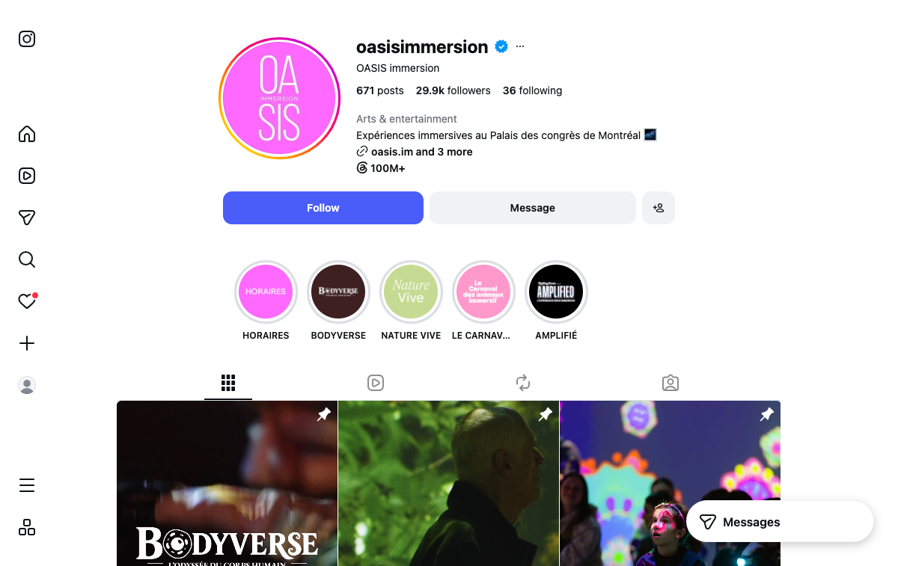
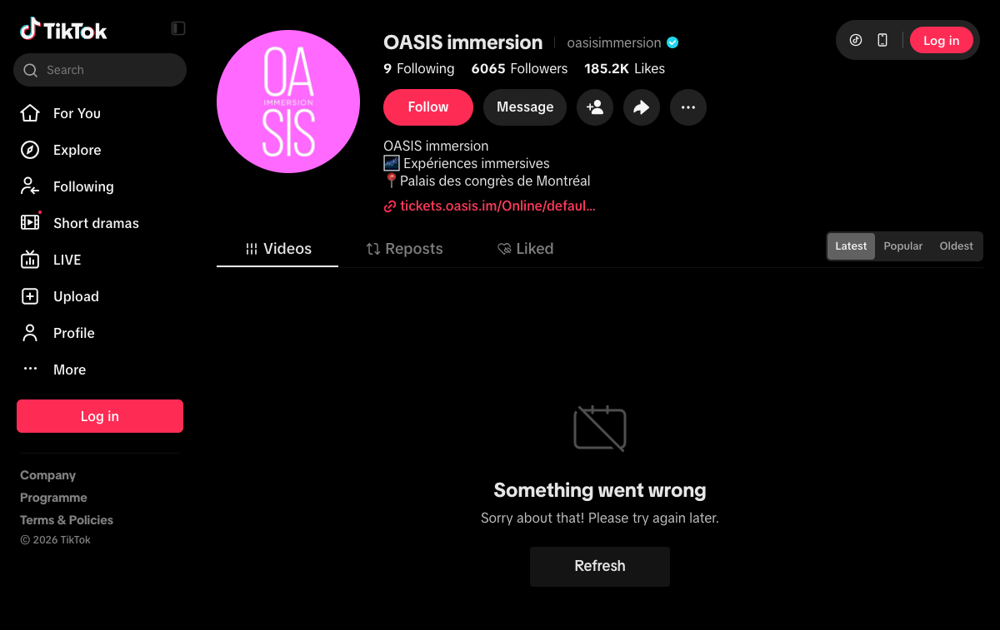
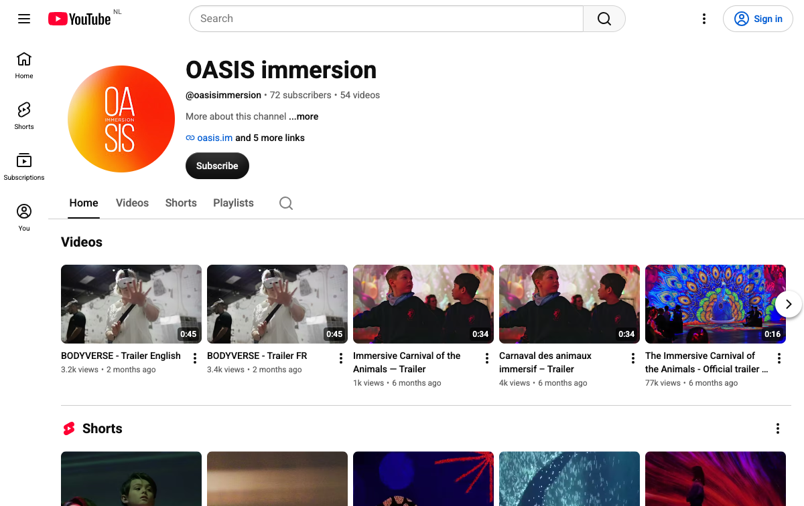

The benchmark study — planned scope
"Comparison of members and their locations on operations and finance — revenue streams and cost categories."
"How does a member perform against top performers, and where is the potential to improve?"
- Revenue streams — which of eleven income lines each venue operates
- Price architecture, and everything charged on top
- Price per minute of experience
- Opening hours, trading days and annual operating capacity
- Digital and social reach across five platforms
- Modelled revenue, with a stated method and sensitivity
- Revenue by stream, in euro
- Cost categories — staff, rent, content, technology, marketing
- Visitor numbers and occupancy
- Contribution margin and EBITDA
- Channel mix and commission paid
Method — what this page can and cannot establish
- Full price architecture — adult, child, reduced, group, family, school, annual pass
- Service, booking and tax charges added on top of the shelf price
- Show and visit duration, where published
- Opening hours per week and trading days — the one capacity measure available for every venue
- Instagram, TikTok, YouTube, Facebook and LinkedIn audience and content volume, captured from each profile
- Which revenue streams each venue actually operates
- Floor area, where published
- Visitor numbers — not one venue in the set publishes them
- Revenue, in total or by stream
- Seats per time slot — no venue's booking system exposes it
- Every cost category: staff, rent, content, technology, marketing
- Contribution margin, EBITDA, profitability
- Capacity utilisation and occupancy
- Secondary spend per visitor and channel commission
- The eleven venuesCountry, city, operator, floor area and opening year.
- Websites and ticketing routesEvery domain, every booking platform, every language.
- Website traffic and national reachAnnual visits as a share of national population, engagement and country split.
- Consolidated social tableFive platforms, all eleven venues, every account linked.
- The social estateWebsite, Instagram, TikTok and YouTube for every operator — audience, publishing language and the year each account was opened.
- Price architectureEvery published rate and everything added on top.
- Price per minuteWhat a visitor pays for each minute inside the venue.
- Opening hours and capacityTrading days, hours per week, hours per year.
- Modelled revenueA like-for-like model with a stated method and a sensitivity range.
- Revenue streams operatedEleven income lines, checked venue by venue.
- Where public data stopsWhat no amount of research reaches.
- SourcesEvery URL behind every figure.
- Highest price, shortest visit. €24.50 is the top headline price of the eleven, and €0.41 per minute is the highest per-minute price — 2.4× Kunstkraftwerk. The 60-minute experience is the shortest published in the set.
- Strongest national reach, falling. 1.12% of the Dutch population visits remastered.nl in a year, ahead of MINA at 0.93% and OASIS at 0.57%. Traffic is down 10.79% while the other four are up 11% to 24%.
- The site converts attention well. 32.36% bounce and 4.22 pages per visit — second-best in the set. The volume is the constraint, not the site.
- Open seven days, but the shortest trading day. 5.8 hours on average against Kunstkraftwerk's 9.0. Monday, Tuesday and Thursday close at 15:00. One day of the next 110 is sold out.
- Four revenue streams of the eleven operated across the set. Tickets, event hire, vouchers and a pilates session. No school rate, membership, combination ticket, food and drink, or shop is published.
- The only venue publishing in one language. OASIS, which opened its accounts in the same months, publishes every post in French and English, draws 29.38% of its traffic from the United States, and has 29,900 Instagram followers to Remastered's 19,700.
- Public data reaches this far and no further. Sections 1 to 9 were built in one working session from published sources. Seats per slot, visitor numbers, cost base and margin are not published by any venue in the set and need operator consent.
- Six operators, eleven venues. MINA runs Bucharest, Cluj, Iași, Timișoara and Sofia.
- Two venues publish their floor area. Visiodrom at 6,500 m² and OASIS at 2,200 m², so the set cannot be normalised for size.
- Three of the eleven opened within the last eighteen months, so they have limited trading history.
| Venue | Country | City | Operator | Floor area | Opened | Website |
|---|---|---|---|---|---|---|
| Kunstkraftwerk | Germany | Leipzig | Kunstkraftwerk Leipzig GmbH | not published | 2016 | kunstkraftwerk-leipzig.com |
| Visiodrom | Germany | Wuppertal | Visiodrom gGmbH | 6,500 m² | not published | visiodrom.de |
| GIOLABS | Luxembourg | Wickrange, at GRIDX | GIOLABS | not published | 2025 | giolabs.lu |
| OASIS immersion | Canada | Montreal | OASIS immersion | 2,200 m² | not published | oasis.im |
| Sensea México | Mexico | Mexico City | Sensea | not published | not published | mexico.sensea.show |
| MINA Bucharest | Romania | Bucharest | MINA | not published | not published | minamuseum.com |
| MINA Cluj | Romania | Cluj-Napoca | MINA | not published | not published | minamuseum.com |
| MINA Iași | Romania | Iași | MINA | not published | not published | minamuseum.com |
| MINA Timișoara | Romania | Timișoara | MINA | not published | not published | minamuseum.com |
| MINA Sofia | Bulgaria | Sofia | MINA | not published | not published | minamuseum.com |
| REMASTERED | Netherlands | Rotterdam | Digital Art Center B.V. | not published | 2021 | remastered.nl |
- Every venue sells through a separate ticketing subdomain or a third-party shop rather than a checkout inside its own site.
- MINA publishes its opening hours as weekly images rather than text, so they are not machine-readable.
- Kunstkraftwerk uses a Linktree hub alongside its own ticketing subdomain.
- Only Remastered and Kunstkraftwerk run a ticketing platform under their own domain. The other four operators use a third-party platform.
| Venue | Country | Website | Ticketing route | Site languages |
|---|---|---|---|---|
| Kunstkraftwerk | Germany | kunstkraftwerk-leipzig.com | tickets.kunstkraftwerk-leipzig.com, plus a Linktree hub | German, English |
| Visiodrom | Germany | visiodrom.de | visiodrom.shop — Wix with bookingkit | German |
| GIOLABS | Luxembourg | giolabs.lu | On-site booking; venue sits inside the GRIDX destination | English, French |
| OASIS immersion | Canada | oasis.im | On-site booking | English, French |
| Sensea México | Mexico | mexico.sensea.show | mexico.sensea.show | Spanish |
| MINA Bucharest | Romania | minamuseum.com | minamuseum.iabilet.ro | Romanian, English |
| MINA Cluj | Romania | minamuseum.com | minamuseum.iabilet.ro | Romanian, English |
| MINA Iași | Romania | minamuseum.com | minamuseum.iabilet.ro | Romanian, English |
| MINA Timișoara | Romania | minamuseum.com | minamuseum.iabilet.ro | Romanian, English |
| MINA Sofia | Bulgaria | minamuseum.com | separate link per location | Romanian, English |
| REMASTERED | Netherlands | remastered.nl | tickets.remastered.nl — Ticketcounter | Dutch, English |
- 1.12% of the Dutch population visits remastered.nl in a year — the highest national reach of any venue here. MINA reaches 0.93%, OASIS 0.57%, Kunstkraftwerk 0.11%, Visiodrom 0.09%.
- It is one of only two sites losing traffic. Down 10.79%, while Kunstkraftwerk, Visiodrom, MINA and OASIS are up between 11% and 24%.
- The site is not the problem. 32.36% bounce, second-lowest in the set. Visitors who arrive engage — there are simply fewer of them each month.
- OASIS is the only venue with reach beyond its own border. 29.38% of its traffic is American. Every other site in the set is 98–100% domestic.
| Venue | Country | Website | National population | Annual visits | % of population | Domestic, % of population | vs prior month | Bounce | Pages/visit | Duration | Traffic by country |
|---|---|---|---|---|---|---|---|---|---|---|---|
| REMASTERED | Netherlands | remastered.nl | 18,448,775 | 206,000 | 1.12% | 1.10% | −10.79% | 32.36% | 4.22 | 2:16 | Netherlands 98.39% · United States 1.61% |
| MINA Bucharest | Romania | minamuseum.com | 18,800,605 | 174,000 | 0.93% | 0.65% | +21.92% | 48.08% | 2.71 | 0:55 | Romania 69.84% · Bulgaria 20.76% · United States 8.86% · France 0.53% |
| OASIS immersion | Canada | oasis.im | 40,467,728 | 232,400 | 0.57% | 0.40% | +24.49% | 31.63% | 7.60 | 4:46 | Canada 70.03% · United States 29.38% · France 0.59% |
| Kunstkraftwerk | Germany | kunstkraftwerk-leipzig.com | 83,644,258 | 94,400 | 0.11% | 0.11% | +11.09% | 38.58% | 3.07 | 3:14 | Germany 98.45% · Switzerland 1.55% |
| Visiodrom | Germany | visiodrom.de | 83,644,258 | 72,400 | 0.09% | 0.09% | +14.19% | 61.62% | 1.79 | 1:10 | Germany 100% |
| MINA Cluj | Romania | minamuseum.com | 18,800,605 | shared domain | — | — | +21.92% | 48.08% | 2.71 | 0:55 | same domain as all MINA venues |
| MINA Iași | Romania | minamuseum.com | 18,800,605 | shared domain | — | — | +21.92% | 48.08% | 2.71 | 0:55 | same domain as all MINA venues |
| MINA Timișoara | Romania | minamuseum.com | 18,800,605 | shared domain | — | — | +21.92% | 48.08% | 2.71 | 0:55 | same domain as all MINA venues |
| MINA Sofia | Bulgaria | minamuseum.com | 6,667,659 | shared domain | — | — | +21.92% | 48.08% | 2.71 | 0:55 | same domain as all MINA venues |
| Sensea México | Mexico | sensea.show | 132,997,658 | not disclosed | — | — | −13.49% | 38.36% | 1.03 | — | Mexico 100% |
| GIOLABS | Luxembourg | giolabs.lu | 687,448 | below reporting threshold | — | — | — | — | — | — | — |
How annual visits are derived. Similarweb's free data publishes a three-month total, not an annual figure and not a year-on-year series. Annual visits here are that three-month total multiplied by four. It assumes no seasonality, which none of these venues is free of, so treat it as an order of magnitude rather than a count.
Limits. National population is a blunt denominator — Montreal draws on Quebec and on cross-border tourism rather than all of Canada, and MINA's domain covers five venues in two countries. Similarweb splits traffic by country, not by language.
- Remastered ranks fifth of eleven on Instagram followers but last on content. 19,700 followers from 655 posts, against MINA Bucharest's 1,186 posts and Kunstkraftwerk's 1,103. On YouTube it is 14 videos against MINA's 159.
- The TikTok followers are there; the engagement is not. 6,870 followers, more than OASIS — but 10.1 likes per follower against OASIS's 30.5.
- Nobody in this category has won YouTube. The largest channel in the entire set is 1,740 subscribers. That is an open lane, not a lost race.
- OASIS is the only account in the set that publishes every post in two languages — French and English in the same caption. It is also the only venue with meaningful foreign traffic, at 29.38% American. Every other account here, Remastered included, posts in one language and draws 98–100% domestic traffic.
| Venue | Country | Instagram language | IG posts | TikTok | TT likes | YouTube | YT videos | Staff on LinkedIn | |||
|---|---|---|---|---|---|---|---|---|---|---|---|
| MINA Bucharest | Romania | 52,900 | Romanian | 1,186 | 12,300 | 180,000 | 217 | 159 | ~30,000 | none found | — |
| Sensea México | Mexico | 45,000 | Spanish | 919 | none found | — | 1,740 | 25 | present | none found | — |
| Kunstkraftwerk | Germany | 37,400 | German and English | 1,103 | none found | — | 553 | 103 | 19,053 | 1,244 | 15 |
| OASIS immersion | Canada | 29,900 | French and English — both in every post | 671 | 6,065 | 185,200 | 72 | 54 | 14,478 | 3,379 | 35 |
| REMASTERED | Netherlands | 19,700 | Dutch — English bio only | 655 | 6,870 | 69,500 | 47 | 14 | 9,447 | 446 | 7 |
| Visiodrom | Germany | 14,800 | German | 741 | none found | — | not retrievable | — | 12,154 | 206 | — |
| MINA Cluj | Romania | 13,000 | Romanian | 895 | 1,453 | 11,300 | group channel | — | present | none found | — |
| MINA Sofia | Bulgaria | 7,340 | Bulgarian | 184 | none found | — | group channel | — | present | none found | — |
| GIOLABS | Luxembourg | 4,823 | English | 36 | none found | — | 19 | — | none found | 125 | — |
| MINA Iași | Romania | 4,626 | Romanian | 289 | none found | — | group channel | — | — | none found | — |
| MINA Timișoara | Romania | no separate account | — | — | none found | — | group channel | — | — | none found | — |
- Kunstkraftwerk has been on Instagram since April 2016 — Remastered since October 2020. The two accounts are four and a half years apart in age and 17,700 followers apart today.
- Remastered, OASIS and Visiodrom all opened their accounts within months of each other, 2020 to 2021. OASIS has since built 29,900 Instagram followers to Remastered's 19,700 on the same vintage.
- MINA opened its accounts last — Instagram June 2023, TikTok August 2023, YouTube January 2024 — and leads the set on all three.
- Four operators have no TikTok account at all — Kunstkraftwerk, Visiodrom, GIOLABS and Sensea.






- Remastered publishes the highest headline price in the set at €24.50. The range runs from roughly €9.52 to €21.82.
- Two venues add charges on top of the shelf price. Remastered adds a 6% service charge — €1.45 on an adult ticket — and OASIS states its prices exclude taxes and fees. The others publish an all-in price.
- Remastered publishes four ticket tiers. Adult €24.50, child €16.50, and a First to Enter upgrade at €29.50 and €21.50.
- Visiodrom has by far the deepest architecture. Eight categories including a €6.00 school rate, a €39.00 family ticket, a €49.00 annual pass and five combination tickets.
- MINA charges roughly €9.52 across its five venues — 39% of the Rotterdam price.
| Venue | Country | Adult, as published | In euro | Added on top | Other published rates |
|---|---|---|---|---|---|
| Kunstkraftwerk | Germany | €18.00 Thu–Fri · €20.00 weekends & holidays | €18.00–20.00 | none published | Membership and gift vouchers offered |
| Visiodrom | Germany | €18.00 | €18.00 | none published | €13.00 reduced and groups of 10+ · €11.00 child 6–13 · €39.00 family · €6.00 school · €49.00 annual pass · +€2.00 flex · combination tickets €22.00–€29.00 · free under 6 |
| GIOLABS | Luxembourg | €16.00 | €16.00 | none published | €9.00 child under 12 · free under 4 · school rate, one free teacher per ten pupils |
| OASIS immersion | Canada | CAD 34.95 (BODYVERSE, with virtual reality) · CAD 26.00 standard entry | €21.82 · €16.23 | “Taxes and fees not included” | CAD 29.95 senior, child 8–17, student · CAD 26.75 family of 4+ · CAD 32.95 groups of 15+ |
| Sensea México | Mexico | not published | — | — | — |
| MINA Bucharest | Romania | RON 50 | €9.52 | none published | RON 45 groups of 4+ · free under 3 |
| MINA Cluj | Romania | RON 50 | €9.52 | none published | RON 45 groups of 4+ · free under 3 |
| MINA Iași | Romania | RON 50 | €9.52 | none published | RON 45 groups of 4+ · free under 3 |
| MINA Timișoara | Romania | RON 50 | €9.52 | none published | RON 45 groups of 4+ · free under 3 |
| MINA Sofia | Bulgaria | not published | — | — | — |
| REMASTERED | Netherlands | €24.50 adult · €29.50 adult incl. First to Enter | €24.50 · €25.95 all-in | 6% service charge per ticket (€1.45) | €16.50 child 6–12 · €21.50 child incl. First to Enter · 25% off for CJP and European Youth Card |
- Remastered charges the most per minute in the set — €0.41, and €0.43 once the service charge is counted.
- That is 2.4 times Kunstkraftwerk and 1.7 times OASIS, both larger venues in larger cities.
- It also runs the shortest experience — 60 minutes, against OASIS's 90 and Kunstkraftwerk's recommended 90 to 120.
- Remastered has both the highest price per minute and the shortest published duration in the set.
- Six of the eleven venues publish no duration at all, so they cannot be placed on this measure.
| Venue | Country | Published duration | Minutes used | Adult price | Price per minute | Index |
|---|---|---|---|---|---|---|
| Kunstkraftwerk | Germany | 1.5–2 hours recommended | 105 | €18.00 | €0.17 | 42 |
| Visiodrom | Germany | not published | — | €18.00 | — | — |
| GIOLABS | Luxembourg | 40–60 minutes | 50 | €16.00 | €0.32 | 78 |
| OASIS immersion | Canada | Last entry plus 1 hour 30 | 90 | €21.82 | €0.24 | 59 |
| Sensea México | Mexico | not published | — | — | — | — |
| MINA Bucharest | Romania | not published | — | €9.52 | — | — |
| MINA Cluj | Romania | not published | — | €9.52 | — | — |
| MINA Iași | Romania | not published | — | €9.52 | — | — |
| MINA Timișoara | Romania | not published | — | €9.52 | — | — |
| MINA Sofia | Bulgaria | not published | — | — | — | — |
| REMASTERED | Netherlands | 60 minutes | 60 | €24.50 | €0.41 | 100 |
- No venue in the set exposes seats per time slot. Six booking systems were tested. Opening hours are the only capacity measure available for comparison.
- Remastered opens seven days a week for 40.5 hours, against Kunstkraftwerk's 36 hours across four days.
- Three of its seven days close at 15:00 — Monday, Tuesday and Thursday, giving 4.5 trading hours each.
- Its average trading day is 5.8 hours, the shortest in the set. Kunstkraftwerk averages 9.0 hours, Visiodrom 8.4, OASIS 7.9 and GIOLABS 7.8.
- Kunstkraftwerk opens four days at an average of 9.0 hours and is closed Monday to Wednesday.
- Remastered's own booking calendar shows one sold-out day in the next 110. 98 days available, 1 sold out, 11 not offered, 13 September to 31 December 2026.
| Venue | Country | Published opening hours | Days open | Hours/week | Avg day | Hours/year |
|---|---|---|---|---|---|---|
| Kunstkraftwerk | Germany | Thu–Sun and public holidays from 10:00 · last entry 18:30, Fri & Sat 19:30 | 4 | 36.0 | 9.0 h | 1,872 |
| Visiodrom | Germany | Wed–Sun 10:00–18:00 · Thu to 20:00 | 5 | 42.0 | 8.4 h | 2,184 |
| GIOLABS | Luxembourg | Tue–Sat 11:00–19:00 · Sun 11:00–18:00 · closed Mon | 6 | 47.0 | 7.8 h | 2,444 |
| OASIS immersion | Canada | Sun 10:00–19:40 · Mon 10:00–14:00 & 15:20–19:20 · Thu 13:00–19:20 · Fri 13:00–19:40 · Sat 10:00–14:00 & 15:40–20:40 · closed Tue & Wed | 5 | 39.7 | 7.9 h | 2,063 |
| Sensea México | Mexico | not published | — | — | — | — |
| MINA Bucharest | Romania | published as weekly images only — not machine-readable | — | — | — | — |
| MINA Cluj | Romania | published as weekly images only — not machine-readable | — | — | — | — |
| MINA Iași | Romania | published as weekly images only — not machine-readable | — | — | — | — |
| MINA Timișoara | Romania | published as weekly images only — not machine-readable | — | — | — | — |
| MINA Sofia | Bulgaria | not published | — | — | — | — |
| REMASTERED | Netherlands | Mon 10:30–15:00 · Tue 10:30–15:00 · Wed 10:30–16:30 · Thu 10:30–15:00 · Fri 10:30–18:00 · Sat 10:30–18:00 · Sun 10:30–16:30 | 7 | 40.5 | 5.8 h | 2,106 |
- Method, stated in full. Annual operating hours × 46 visitors per operating hour × the venue's published adult price, with a ±10% sensitivity. The throughput figure is derived from Remastered's own publicly confirmed milestones — 200,000 visitors by June 2023 and 500,000 by July 2026, an average pace of about 97,000 a year, divided by its 2,106 annual operating hours.
- It does not vary throughput by venue, because no public data supports doing so, and it uses the adult price for every visitor, which overstates every venue equally. The ranking is the output, not the euro figures.
- Remastered models highest at €2.37m. Its operating hours are third of five and throughput is the model's constant, so the difference arises from its €24.50 price.
- GIOLABS trades 16% more hours than Remastered and models 24% below it.
- The modelled range across the set is €1.55m to €2.37m. Within this model the variation comes from price and opening hours.
- Six of the eleven cannot be modelled because they publish no machine-readable opening hours.
| Venue | Country | Hours/year | Modelled visitors | Adult price | Modelled revenue | −10% | +10% |
|---|---|---|---|---|---|---|---|
| REMASTERED | Netherlands | 2,106 | 96,876 | €24.50 | €2.37m | €2.14m | €2.61m |
| OASIS immersion | Canada | 2,063 | 94,891 | €21.82 | €2.07m | €1.86m | €2.28m |
| Visiodrom | Germany | 2,184 | 100,464 | €18.00 | €1.81m | €1.63m | €1.99m |
| GIOLABS | Luxembourg | 2,444 | 112,424 | €16.00 | €1.80m | €1.62m | €1.98m |
| Kunstkraftwerk | Germany | 1,872 | 86,112 | €18.00 | €1.55m | €1.40m | €1.71m |
| Sensea México | Mexico | — | — | — | cannot be modelled — no published opening hours | — | — |
| MINA Bucharest | Romania | — | — | — | cannot be modelled — no published opening hours | — | — |
| MINA Cluj | Romania | — | — | — | cannot be modelled — no published opening hours | — | — |
| MINA Iași | Romania | — | — | — | cannot be modelled — no published opening hours | — | — |
| MINA Timișoara | Romania | — | — | — | cannot be modelled — no published opening hours | — | — |
| MINA Sofia | Bulgaria | — | — | — | cannot be modelled — no published opening hours | — | — |
- Visiodrom operates the widest mix — restaurant, shop, a €49.00 annual pass, a €6.00 school rate, and five cross-attraction combination tickets with a zoo and three museums.
- Kunstkraftwerk lists the widest range of additional products. Its own link hub offers a membership, an exclusive event location, immersive yoga, a corporate Christmas product and a Mobile Immersive Box.
- Two operators publish a membership or annual pass. Nine of the eleven venues do not.
- One operator publishes combination tickets with neighbouring attractions. Visiodrom, with five partners.
- All six operators publish a corporate or private hire offer. OASIS states "more than 150 corporate, institutional, and private events" since opening.
- Remastered publishes four of the eleven streams — tickets, event hire, vouchers and a pilates session. No school rate, membership, combination ticket, food and drink or shop appears on its own site.
| Venue | Ticketed shows | Corporate hire | Schools rate | Membership | Food & drink | Shop | Combo tickets | Vouchers | Kids programme | Alternative programming | Multi-site |
|---|---|---|---|---|---|---|---|---|---|---|---|
| Kunstkraftwerk | yes | yes | yes | yes | — | — | — | yes | — | yoga, ballet, Christmas, Mobile Box | single |
| Visiodrom | yes | yes | €6.00 | €49.00 | Aposto | yes | 5 partners | yes | — | special weeks | single |
| GIOLABS | yes | 5 rooms | yes | — | — | — | — | — | — | pilates | single |
| OASIS immersion | yes | 150+ events | groups 15+ | — | — | — | — | — | — | custom design | single |
| Sensea México | yes | — | — | — | — | — | — | — | — | — | single |
| MINA Bucharest | yes | yes | RON 45 | — | — | — | — | — | MINA Kids | yoga, jazz, screenings | 1 of 5 |
| MINA Cluj | yes | yes | RON 45 | — | — | — | — | — | MINA Kids | yoga, pilates, film | 1 of 5 |
| MINA Iași | yes | yes | RON 45 | — | — | — | — | — | MINA Kids | — | 1 of 5 |
| MINA Timișoara | yes | yes | RON 45 | — | — | — | — | — | — | — | 1 of 5 |
| MINA Sofia | yes | yes | — | — | — | — | — | — | — | — | 1 of 5 |
| REMASTERED | yes | yes | — | — | — | — | — | yes | — | pilates | single |
€0.41 a minute against a set that runs down to €0.17, on a 60-minute experience where OASIS publishes 90 minutes and Kunstkraftwerk a recommended 90 to 120. Both figures are published on each venue's own site.
47 YouTube subscribers across 14 videos. MINA publishes 159 videos and Kunstkraftwerk 103. Across the whole set, YouTube audiences are small — the largest is Sensea at 1,740.
No membership, school rate, combination ticket, food and drink or retail appears on the Remastered site. Visiodrom publishes all five of those, and the widest mix in the set.
Not one venue in this set publishes any of the following
- Visitor numbers, in total or by month
- Revenue, in total or split by stream
- Seats per time slot and slots per day — six booking systems were tested and none exposes it
- Staff cost, headcount, and the split between fixed and flexible labour
- Rent, and whether the building is leased or owned
- Content cost — produced in-house, co-produced or licensed, and on what terms
- Projection and technology capital expenditure, and the replacement cycle
- Marketing spend, and the split between brand and performance
- Reseller and online travel agent commission, and the channel mix
- Capacity utilisation and occupancy
- Secondary spend per visitor, contribution margin and EBITDA
- The public half is finished, in a day, at no cost. Everything in sections 1 to 9 came from published sources in one working session.
- The private half cannot be started at any price without operator consent. No amount of desk research substitutes for a venue opening its accounts.
- A paid study's deliverable is therefore access and a common template — obtaining comparable data from operators, and defining the definitions that make six submissions comparable.
- That template covers common definitions of visitor, capacity, occupancy, contribution, and the boundary between content cost and capital expenditure.
Every venue name, account and platform above links to the live source.
Kunstkraftwerk Leipzig — own website · leipzig.travel (prices, hours) · own Linktree (revenue streams) · Instagram · YouTube · Facebook · LinkedIn
Visiodrom Wuppertal — own ticket page (full price list) · own homepage (floor area, hours, restaurant, shop) · own shop · Instagram · Facebook
GIOLABS — own website (prices, hours, duration, privatisation, schools) · GRIDX · Instagram
OASIS immersion — own fees and schedule page (prices, hours, duration) · own homepage (floor area, event volume) · GetYourGuide (standard entry price) · Instagram · TikTok · YouTube · LinkedIn
Sensea México — own website · own ticketing site · Instagram · YouTube · Facebook
MINA — Bucharest, Cluj, Iași, Timișoara, Sofia — own ticket page (five locations) · Bucharest page (private events, MINA Kids, programming) · own ticketing platform · Romania Insider (prices) · Instagram Bucharest, Cluj, Sofia, Iași · TikTok · YouTube
Remastered Rotterdam — own information page (prices, service fee, opening hours) · own ticket shop (price tiers, 6% service charge, 110-day availability calendar) · Instagram · TikTok · YouTube
Exchange rates, September 2026 — €1 = CAD 1.602, €1 = RON 5.25